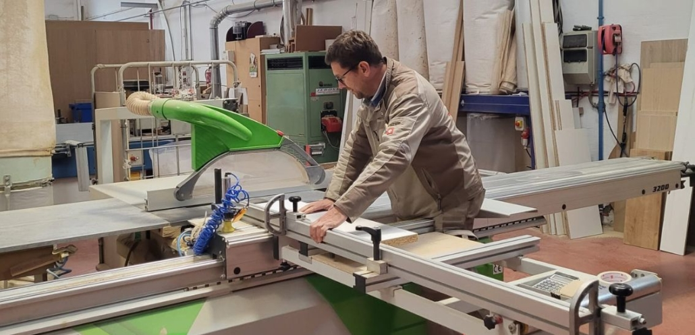

Apertura de página web
Damos la bienvenida a nuestra nueva página web, un espacio donde podrás conocer nuestros servicios de carpintería, los tipos de madera que trabajamos y nuestros proyectos.
Leer másEn Carpinteria Daniel transformamos la madera en piezas únicas que combinan diseño, calidad y funcionalidad. Somos una carpintería con pasión por el detalle y el trabajo bien hecho, especializada en muebles a medida, trabajos de interior y soluciones personalizadas para hogares y negocios.


| Tipo de Madera | Clasificación | Características Principales | Usos Comunes | Precio Aproximado por Horas Trabajadas |
|---|---|---|---|---|
| Roble | Madera dura | Muy resistente, duradera, veta marcada | Muebles de lujo, pisos, tarimas | 1300 |
| Nogal | Madera dura | Tonos oscuros, elegante, fácil de pulir | Muebles finos, ebanistería, decoración | |
| Caoba | Madera dura | Color rojizo, estable y de alta calidad | Muebles, revestimientos, carpintería fina | 1500 |
| Teca | Madera dura | Resistente a la humedad y al clima | Muebles de exterior, cubiertas de barcos | 2000 |
| Pino | Madera blanda | Ligera, económica, fácil de trabajar | Estructuras, muebles básicos, molduras | 400 |
| Cedro | Madera blanda | Aroma natural, repele insectos | Armarios, cajones, cubiertas | 800 |
| Abeto | Madera blanda | Color claro, ligera y versátil | Construcción, carpintería general |
Damos la bienvenida a nuestra nueva página web, un espacio donde podrás conocer nuestros servicios de carpintería, los tipos de madera que trabajamos y nuestros proyectos.
Leer más
Iniciamos una nueva etapa incorporando proyectos de carpintería totalmente personalizados, adaptados a las necesidades y gustos de cada cliente.
Leer más